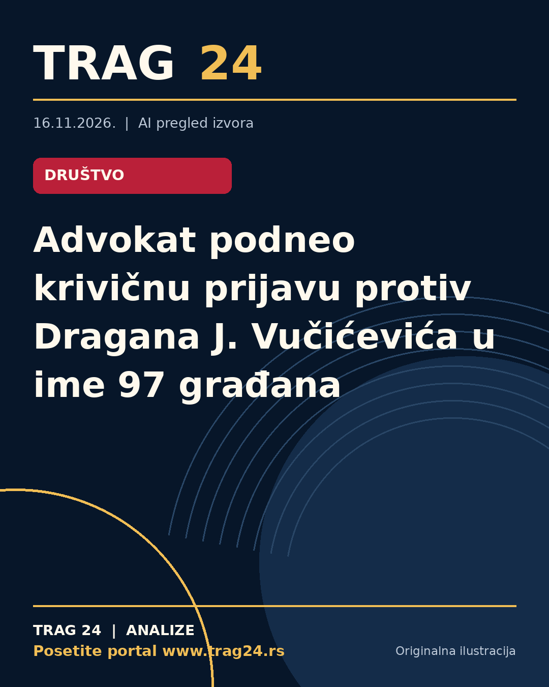

Advokat podneo krivičnu prijavu protiv Dragana J. Vučićevića u ime 97 građana

ŠTA SE DOGODILO
Advokat Ivan S. Petrović iz Kraljeva je u ime 97 oštećenih građana Srbije podneo koordinisane krivičnopravne i regulatorne postupke protiv Dragana J. Vučićevića, glavnog i odgovornog urednika 'Informera', kao i protiv privrednog društva 'Insajder tim d.o.o. Beograd'.
HRONOLOGIJA
Krivična prijava je 13. novembra preporučenom poštom dostavljena Višem javnom tužilaštvu u Beogradu, Posebnom odeljenju za visokotehnološki kriminal. Istog dana podnet je i zahtev Regulatornom telu za elektronske medije za pokretanje postupka i privremeno oduzimanje dozvole za medijsku uslugu, odnosno zabrane emitovanja emisije 'Kolegijum' i sličnih formata do 30 dana.
ŠTA NAVODE IZVORI
Prijava navodi sledeće osnovane sumnje – da je Vučićević od sredine 2023. do oktobra ove godine u emisijama uživo izvršio pet produženih krivičnih dela, uključujući izazivanje nacionalne, rasne i verske mržnje i netrpeljivosti, ugrožavanje sigurnosti, nasilničko ponašanje, podstrekavanje na zlostavljanje i mučenje te izazivanje panike i nereda. Izrazito je kritikovan javni govor Vučićevića koji je, prema prijavi, sadržao dehumanizaciju određenih grupa i pozive na nasilje, uključujući i direktne pozive policiji na nasilje, kao i omalovažavanje žrtava tragedije na Železničkoj stanici u Novom Sadu.
ŠTA JE POTVRĐENO
Iz izvora je potvrđeno da je advokat Petrović podneo kolektivnu krivičnu prijavu i zahtev regulatornom telu u vezi sa Vučićevićevim izjavama u emisijama uživo. Takođe, potvrđeno je da su zatražene mere o privremenom oduzimanju dozvole za emitovanje i da su upućeni zahtevi za čuvanje audio-vizuelnih zapisa i metapodataka spornih emisija. Navedeno je i da je predloženo uvođenje mera zabrane pristupa studijima i izvršavanja uredničkih dužnosti za Vučićevića.
ŠTA NIJE POTVRĐENO
Nema potvrde iz nezavisnih izvora ili izjava samog Dragana J. Vučićevića ili njegovih zastupnika u vezi sa navodima u krivičnoj prijavi. Ne postoje informacije o pokretanju ili ishodu sudskog ili regulatornog postupka.
ŠTA OSTАJE OTVORENO: Ostaje nepoznato kako će Više javno tužilaštvo i Regulatorno telo za elektronske medije postupiti povodom podnete krivične prijave i zahteva, kao i da li će biti pokrenut sudski proces i izrečene mere koje su zatražene. Takođe, nije poznat stav samog Vučićevića i njegovih pravnih zastupnika o optužbama.
Izvori
- https://nova.rs/vesti/hronika/advokat-iz-kraljeva-podneo-krivicnu-prijavu-protiv-dragana-j-vucicevica-u-ime-97-gradjana/
- https://n1info.rs/vesti/advokat-podneo-krivicnu-prijavu-protiv-dragana-j-vucicevica-u-ime-97-gradjana/
- https://www.danas.rs/vesti/drustvo/advokat-podneo-krivicnu-prijavu-protiv-dragana-j-vucicevica-u-ime-97-gradjana/
Ova analiza je pripremljena uz pomoć veštačke inteligencije na osnovu javno dostupnih izvora. Navodi izvora nisu nužno nezavisno potvrđeni.